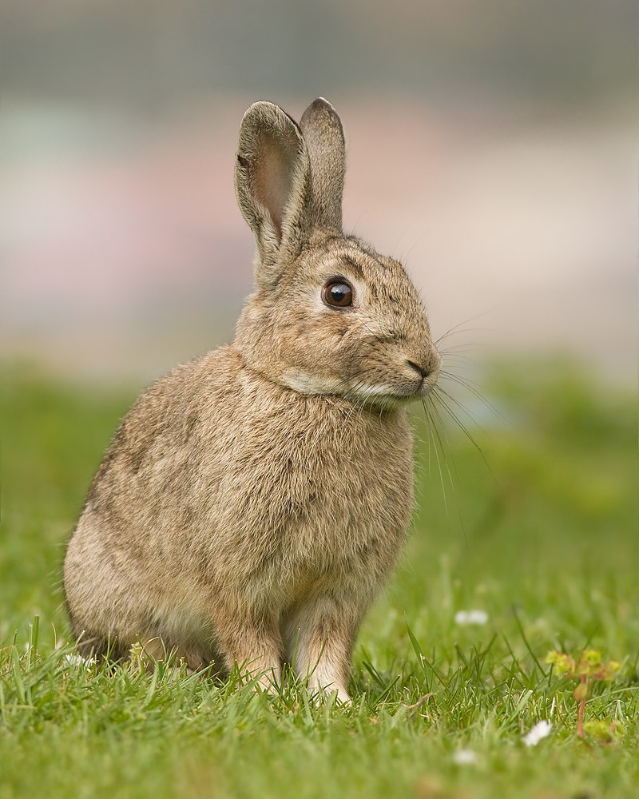

Kittens
The word "kitten" derives from the Middle English word kitoun, which
in turn came from the Old French chitoun or cheton.[1] Juvenile big
cats are called "cubs" rather than kittens; either term (but usually
more commonly "kitten") may be used for the young of smaller wild
felids, such as ocelots, caracals, and lynxes.[2] A feline litter
usually consists of two to five kittens[3] born after a gestation
lasting between 64 and 67 days, with an average length of 66 days,[3]
but from one to more than ten are known.[4] Kittens emerge in a sac
called the amnion, which is bitten off and eaten by the mother cat.[5]
Puppies
Puppies are born with a fully functional sense of smell. They are
unable to open their eyes. During their first two weeks, a puppy's
senses all develop rapidly. During this stage the nose is the primary
sense organ used by puppies to find their mother's teats, and to
locate their littermates, if they become separated by a short
distance. Puppies open their eyes about nine to eleven days following
birth. At first, their retinas are poorly developed and their vision
is poor. Puppies are not able to see as well as adult dogs. In
addition, puppies' ears remain sealed until about thirteen to
seventeen days after birth, after which they respond more actively to
sounds. Between two and four weeks old, puppies usually begin to
growl, bite, wag their tails, and bark.[6]
Bunnies

Rabbits are small mammals in the family Leporidae of the order
Lagomorpha (along with the hare and the pika). Oryctolagus cuniculus
includes the European rabbit species and its descendants, the world's
305 breeds[1] of domestic rabbit. Sylvilagus includes 13 wild rabbit
species, among them the seven types of cottontail. The European
rabbit, which has been introduced on every continent except
Antarctica, is familiar throughout the world as a wild prey animal and
as a domesticated form of livestock and pet. With its widespread
effect on ecologies and cultures, the rabbit (or bunny) is, in many
areas of the world, a part of daily life—as food, clothing, a
companion, and a source of artistic inspiration.